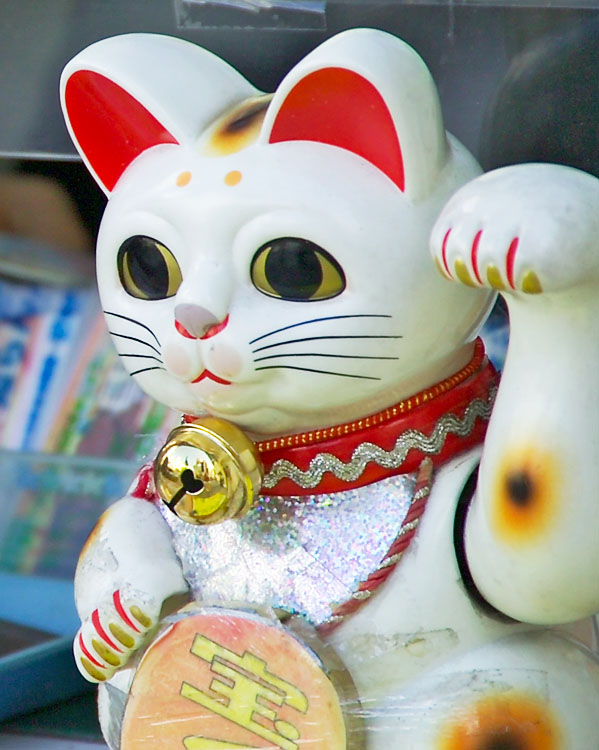

Кошки в истории, религии и мифологии
Кошки в Древнем Египте
Кошка была одним из животных, которым поклонялись в Древнем Египте. Она являлась символом плодородия и солнца. До того, как стать домашним любимцем, кошка, прежде всего, стала оберегающим животным. Охотясь на мелких грызунов, они оберегали амбары, где египтяне хранили свою провизию, жизненно важную для этого сельскохозяйственного народа. А охотясь на крыс, кошки устраняли источник серьёзных заболеваний.
Кошки в Азии
В Японию кошки были завезены в VI веке и служили высшей наградой, которую мог дать император своим приближённым. Существует несколько вариантов легенды о кошке, помогающей своей хозяйке или хозяину. Фарфоровая или фаянсовая статуэтка кошки черепахового окраса с поднятой к правому уху лапой — Манэки-нэко, до сих пор считается привлекающей денежную удачу.
© Википедия